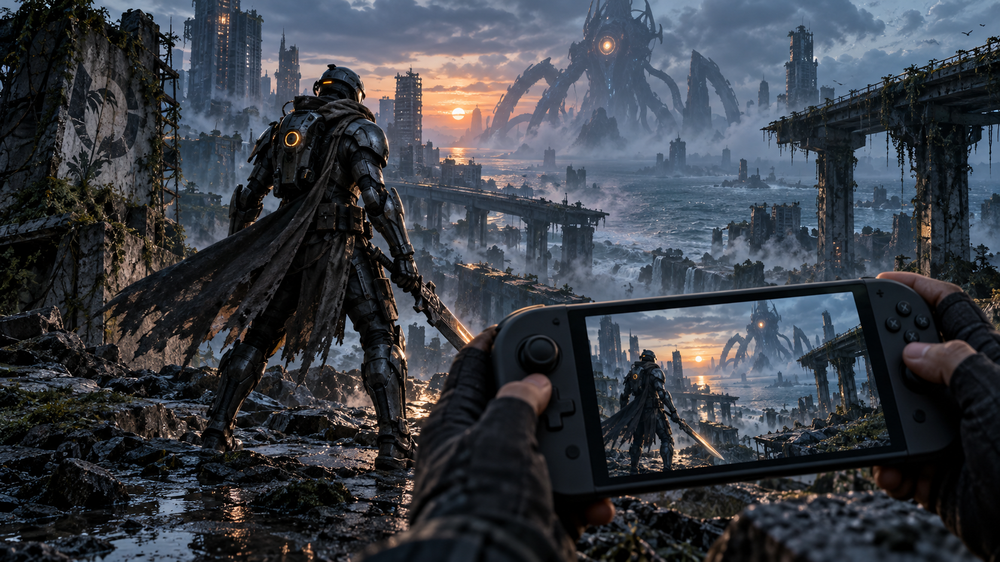

news · Industry
Stellar Blade Switch 2 Demo Is Available
A free Stellar Blade Complete Edition demo is now on the Switch 2 eShop, giving players a direct way to judge the port's interpolated 60 FPS target before launch.

What happened
Shift Up released a free demo for Stellar Blade Complete Edition on the Nintendo Switch 2 eShop on September 20, following the game's Tokyo Game Show 2026 presentation. The developer announced the download through the official Stellar Blade account, while RPG Site and Gematsu independently confirmed that it is live. RPG Site reports a 6.1GB download; availability may appear in the console eShop before the web store in some regions.
The full Switch 2 edition is scheduled for November 5 in the Americas and Europe. Shift Up's Korean announcement lists November 6 at midnight in Korea and Japan, reflecting the regional time difference rather than a conflicting release plan. The official Nintendo listing describes a 25.4GB estimated full-game download and includes the NieR:Automata and Goddess of Victory: NIKKE DLC content.
Shift Up also showed four Bayonetta-inspired outfits. The company says that cosmetic collaboration will arrive as a free update for Switch 2, PlayStation 5 and PC when the Switch 2 edition launches. The demo itself is the new release today; the full game and outfits are still scheduled for November.
Why it matters
Stellar Blade relies on precise dodges, parries and fast camera movement, which makes this demo more useful than a conventional promotional trailer. Players can now evaluate the port on their own display and controller instead of treating a frame-rate target as proof of how the finished game will feel.
Shift Up technical director DongKi Lee told Nintendo Everything that the Switch 2 version targets 60 FPS in handheld and docked play by running from an even 30 FPS base, using Nvidia DLSS for upscaling and AMD FSR 3.1 frame interpolation for the final presentation. He described an upscaled 1080p image while docked and a 720p image in handheld mode. Those are developer targets, not independent measurements of every scene.
Frame interpolation creates intermediate images between conventionally rendered frames. It can make motion look smoother, but it does not turn a 30 FPS input and simulation base into native 60 FPS responsiveness, and fast movement can expose visual artifacts. That is a technical trade-off, not evidence that this particular port is defective; the public demo is the appropriate place to decide whether it is noticeable or bothersome in practice.
The Arcade World take
A pre-release demo is the right answer to uncertainty around an ambitious handheld conversion. The most important Switch 2 question is not whether a frame counter can display 60, but whether combat timing remains readable and consistent when the image is reconstructed from a lower base rate. Personal tolerance varies, so a free test is more valuable than arguments built from compressed video clips.
Run the same early combat encounter twice: once handheld and once docked. Watch the outline of the character and weapon during quick camera turns, check whether distant geometry shimmers, and pay attention to the delay between a button press and an on-screen dodge or parry. A stable experience matters more than isolated visual imperfections in still frames.
The physical edition also has a preservation advantage. Shift Up says the complete game data is stored on the cartridge rather than a game-key card and does not require an extra game download to start. That claim applies to the launch build on the card; future patches and optional online features can still require storage and connectivity.
What happens next
Shift Up has not yet published full demo notes explaining its exact content, progress-transfer rules or whether the demo build matches the final day-one version. Until the company confirms those details, players should not assume that save data will carry over or that every performance characteristic is final.
The confirmed next milestone is the Complete Edition launch on November 5 in Western regions and November 6 in Korea and Japan. At launch, the four Bayonetta outfits are also due as a free update on Switch 2, PS5 and PC. Buyers interested in the physical copy should verify regional packaging, because retailer dates and included languages can differ even when the cartridge contains the full game data.
For now, skip the pre-order decision and use the demo as a hardware check. If responsiveness feels consistent and the reconstructed image holds up on your screen, the Switch 2 version offers a portable route into the full game and its prior DLC. If the interpolation looks distracting or combat feels delayed, wait for final-build analysis or choose the existing PS5 or PC edition instead.
Sources and further reading
- Stellar Blade official account — Switch 2 demo release announcement
- Shift Up — Switch 2 release, Complete Edition and physical cartridge details
- Nintendo — Stellar Blade Complete Edition product listing
- Nintendo Everything — Shift Up technical director interview
- RPG Site — independent demo availability and download-size confirmation
- Gematsu — independent demo and Bayonetta update confirmation
Keep exploring
Open the Game Room or visit the latest stories.